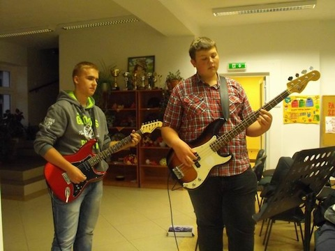

W sobotnie popołudnie 28 września w Gminnym Ośrodku Kultury w Bejscach odbyło się miłe spotkanie biesiadne pt. „Pożegnanie Lata". W wesołej atmosferze goście śpiewali pieśni biesiadne które wszyscy znamy a wspomagali się śpiewnikami (książeczkami) drukowanymi na tę okazję. Całość imprezy poprowadził P. Radosław Kornaś przy pomocy młodzieżowego zespołu wokalnego działającego przy GOK Bejsce.
Menu główne na tym spotkaniu to potrawy z ziemniaków - bo akurat trwają wy kopki. Gospodyni spotkania P. Alina Włusek częstowała gości zupą ziemniaczaną z warzywami a pyszną zapiekankę również ziemniaczaną przygotowała i częstowała P. Zdzisława Sterna z Uściszowic. Ziemniak królował więc w różnej formie i różnych smakach. Pyszne ciasta i ciasteczka przyniosły gospodynie, które przyszły na to spotkanie. Były również napoje, kawa, herbata i soki.
Wszyscy tęsknimy już za latem które minęło bo już nastały chłodne dni i jesienne mgły. W spotkaniu udział wzięli dorośli młodzież i dzieci z terenu całej naszej gminy.
